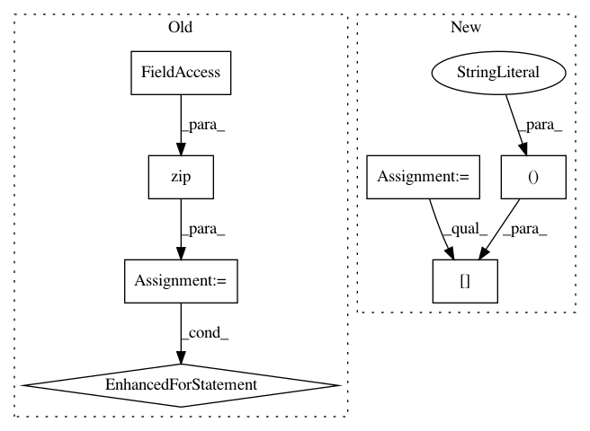

b46c893e2c0f9cd505b597c2ff215a0df04b6050,lifelines/fitters/npmle.py,,log_likelihood,#,171
Before Change
def log_likelihood(observation_intervals, p, turnbull_interval_lookup, weights):
ll = 0
for observation_interval, w in zip(observation_intervals, weights):
min_, max_ = turnbull_interval_lookup[observation_interval]
ll += w * np.log(p[min_ : max_ + 1].sum())
return ll
def reconstruct_survival_function(probabilities, turnbull_intervals, timeline=None, label="NPMLE"):
After Change
def log_likelihood(p, turnbull_interval_lookup, weights):
P = cumulative_sum(p)
ix = np.array(list(turnbull_interval_lookup.values()))
return (weights * np.log(P[ix[:, 1] + 1] - P[ix[:, 0]])).sum()
def reconstruct_survival_function(probabilities, turnbull_intervals, timeline=None, label="NPMLE"):
In pattern: SUPERPATTERN
Frequency: 3
Non-data size: 7
Instances
Project Name: CamDavidsonPilon/lifelines
Commit Name: b46c893e2c0f9cd505b597c2ff215a0df04b6050
Time: 2020-05-19
Author: cam.davidson.pilon@gmail.com
File Name: lifelines/fitters/npmle.py
Class Name:
Method Name: log_likelihood
Project Name: cesium-ml/cesium
Commit Name: 2ab1119596b420cc696a783271d617562ccf7e28
Time: 2017-03-29
Author: brettnaul@gmail.com
File Name: cesium/featurize.py
Class Name:
Method Name: featurize_single_ts
Project Name: victoresque/pytorch-template
Commit Name: 6027fdf7aa77c038bf533ebcf7b704b1c79c3bc4
Time: 2018-09-16
Author: sunq0313@gmail.com
File Name: model/metric.py
Class Name:
Method Name: my_metric2